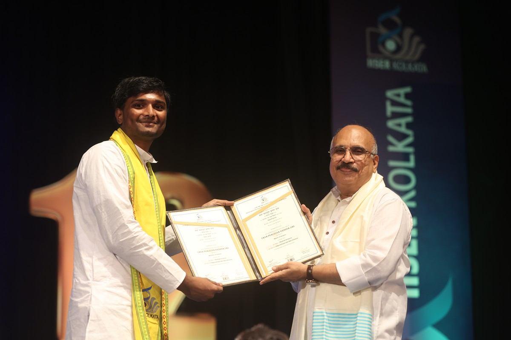

News & Updates
- Presented a poster at the XIth International Conference on Perspectives in Vibrational Spectroscopy (ICOPVS-2026), Banaras Hindu University, Varanasi, on ultrafast, nonlinear, and terahertz spectroscopy of a benzoxazolium–coumarin derivative.
- Our study, Terahertz Time-Domain Spectroscopy and Density Functional Theory Analysis of Low-Frequency Vibrational Modes of a Benzoxazolium–Coumarin Donor–π–Acceptor Chromophore , was posted on arXiv .
-
Graduated with an Integrated Bachelor and Master of Science
(BS–MS) degree.

Receiving my BS–MS degree from the Director of IISER Kolkata, Prof. Sunil Kumar Khare. - Successfully defended my MS thesis, Ultrafast Carrier and Phonon Dynamics of Polymers and Aluminium Thin Films .